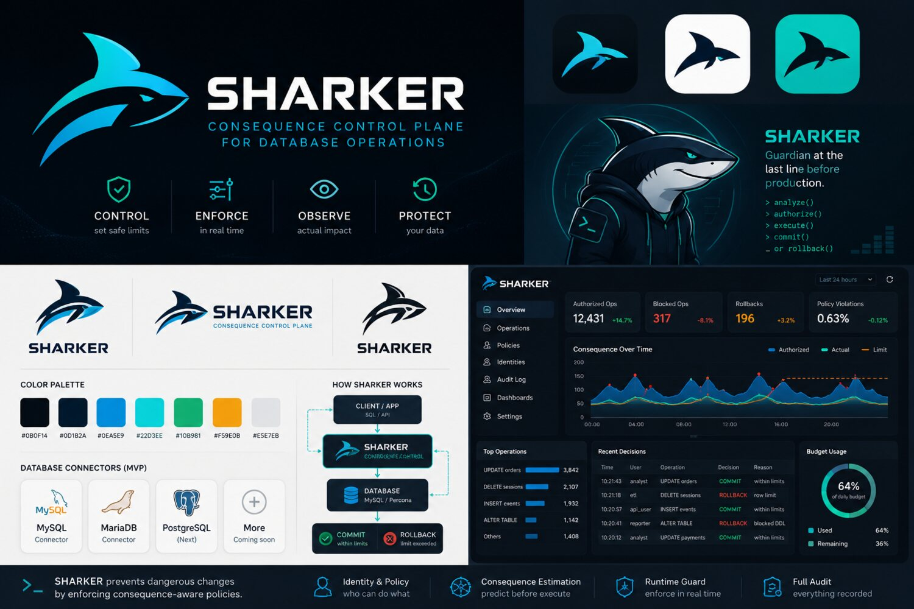

Enterprise Observer
Passive database activity monitoring designed to fit existing production workflows without routing application traffic through an enforcement gateway.

Turn database activity into actionable security intelligence. Detect anomalies, investigate suspicious operations and reduce operational risk across production environments.
Production-oriented visibility · Passive Observer deployment · Expert-led investigations
Bring together SQL activity, risk signals and operational context in one place, so database and security teams can focus on events that need attention.
Passive database activity monitoring designed to fit existing production workflows without routing application traffic through an enforcement gateway.
Surface unusual query patterns, changes in activity and potentially risky operations for review.
Correlate observed activity and SQL patterns to support faster technical investigations and informed remediation.
Make database activity, findings and monitoring health visible to infrastructure and security teams.
Database risk is not limited to outages. Unexpected access patterns, potentially destructive SQL and unusual operational behavior all deserve investigation.
Discuss your security requirements →Illustrative interface — not a live customer feed.
Observer mode is designed as a passive monitoring layer. It does not block, rewrite or approve production SQL. Enforcement capabilities are a separate product direction, not a prerequisite for monitoring.
Define monitored database sources and collection boundaries.
Collect supported activity and operational telemetry.
Review anomalies, risk signals and historical patterns.
Investigate findings and apply changes through existing operational controls.
Engine coverage and deployment architecture are confirmed during technical scoping. Monitoring is not a substitute for access control, backup, DLP or a SIEM.
SHARKER's initial Observer work focuses on MySQL / Percona environments. Additional database technologies are evaluated against their telemetry capabilities and integration requirements.
Enterprise engagements combine scoped deployment, ongoing platform updates, investigation workflows and technical support. Licensing and coverage are tailored to your infrastructure and requirements.